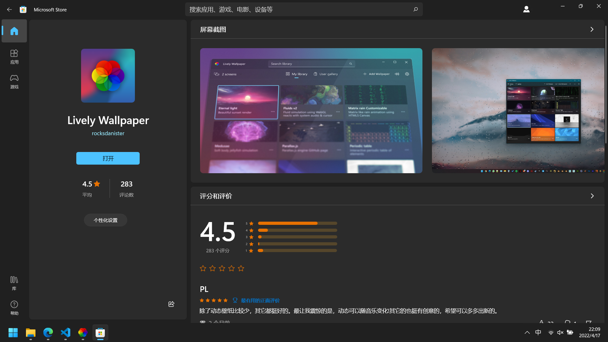
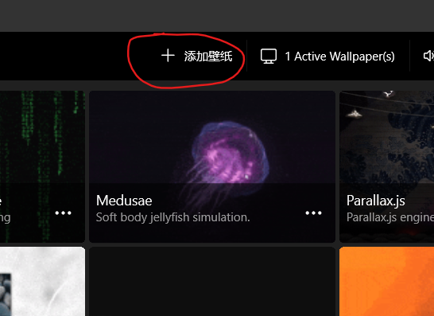
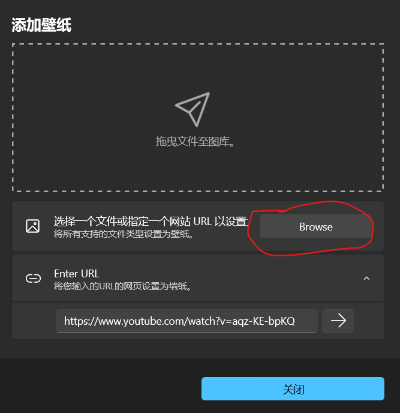
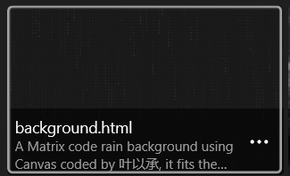
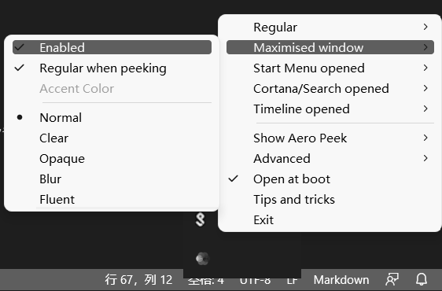
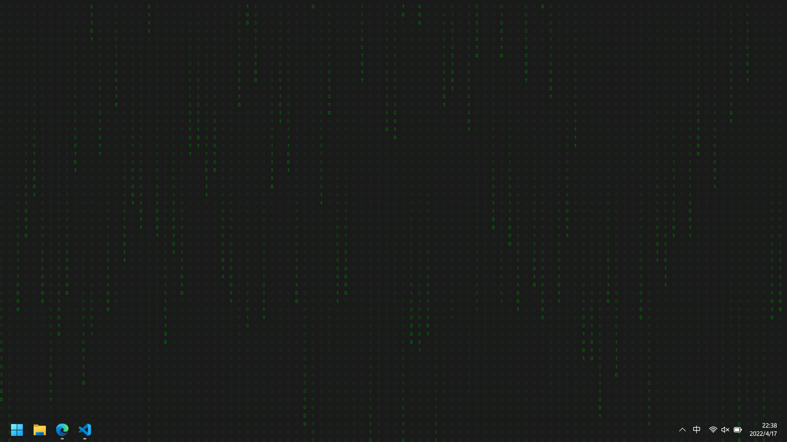

好看的Matrix字符雨动态桌面和透明任务栏
发布于 2022年4月17日 更新于 2022年5月9日动态桌面
首先下载软件lively wallpaper，如图

在准备好一个html文件，写入:
<style>html,body{padding:0;margin:0;height:100%;width:100%;background-color:#202020}</style>
<canvas id="matrix" style="height:100%;width:100%"></canvas>
<script type="text/javascript">
//文字
var txts = "01";
//转为数组
txts = txts.split("");
var matrix=document.getElementById("matrix");
var context=matrix.getContext("2d");
matrix.height=window.innerHeight;
matrix.width=window.innerWidth;
var drop=[];
var font_size=16;
var columns=matrix.width/font_size;
for(var i=0;i<columns;i++)
drop[i]=1;
function drawMatrix(){
context.fillStyle="rgba(32,32,32,0.1)";
context.fillRect(0,0,matrix.width,matrix.height);
context.fillStyle="green";
context.font=font_size+"px";
for(var i=0;i<columns;i++){
//随机取要输出的文字
var text = txts[Math.floor(Math.random()*txts.length)];
//输出文字，注意坐标的计算
context.fillText(text,i*font_size,drop[i]*font_size);/*get 0 and 1*/
if(drop[i]*font_size>(matrix.height*2/3)&&Math.random()>0.95)/*reset*/
drop[i]=0;
drop[i]++;
}
}
setInterval(drawMatrix,50);
</script>
点击右上角的+ 添加壁纸按钮

在弹出窗口上点击Browse按钮

选择你刚刚写好的html文件，确认就行

透明任务栏
下载软件TranslucentTB
在托盘区设置勾选如下(注意选择Open at boot,开机启动):

同时设置是最大化窗口时任务栏不是透明的，没有最大化窗口时是透明的（Regular勾选clear，其余勾选normal）
效果
如下:
